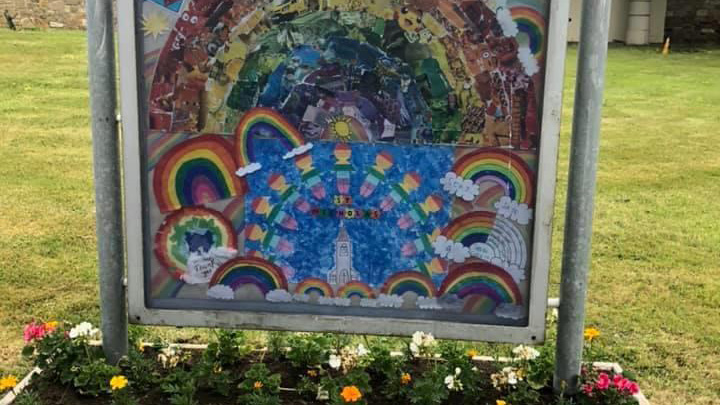

NPN 12 DAYS OF CHRISTMAS
CHRISTMAS PENITENTIAL PRAYER
ADVENT MESSAGE FROM BISHOP TREANOR
pdfs/downloads/NPN 12 Days of Christmas finalfull 16pg.pdf
RETURN TO PUBLIC CELEBRATION OF MASS LIVE DAILY WEB MASS AT ST. BERNARD’S
CORONAVIRUS - A SIMPLE GUIDE
STANDING ORDER FORM
CONTACT DETAILS FOR HELPLINES
PHA STOP COVID NI EXPLAINER LEAFLET
DAY FOR LIFE
PPC UPDATE TO PARISHIONERS

Our Aim and Purpose is to be:
a community with Jesus as its centre.
a people committed to spreading His kingdom (more)
a community where each person feels he or she belongs and has a role to play.
founded on prayer and scripture; listening and guided by the Spirit of God.
a place to grow as a person and in the faith and knowledge of God.
a partnership of clergy and laity reaching out to those in need.
respectful of those whose faith, views and philosophies differ to our own.
people with a heart for unity in diversity among all people, especially within the Christian family.
a source and channel of justice, peace, hope and love in a hurting world.
We believe that together, this is a life worth living, a cause worth following. There is much to be and much to do ........ JOIN WITH US in making this a reality!